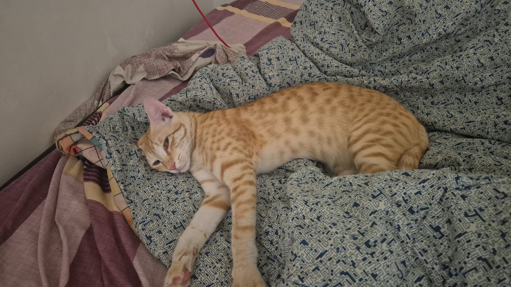

About
A handsome ginger tabby with golden amber eyes and a sleek striped coat. He looks adventurous, but he’s also gentle and affectionate with the people he trusts.
Bhopal, India • Orange tabby • Golden eyes
A tiny explorer with big curiosity, a gentle heart, and serious hide-and-seek skills.

Kutchu is a charming orange tabby from Bhopal with a big personality packed into a small, furry body. He’s expressive, playful, and endlessly curious—always checking corners, sneaking into hiding spots, and following his favorite human around.
A handsome ginger tabby with golden amber eyes and a sleek striped coat. He looks adventurous, but he’s also gentle and affectionate with the people he trusts.
One of the most important relationships in Kutchu’s life is with Beeg. He follows, sits nearby, and demands attention at the funniest possible times.
Kutchu once had a sister who shared his early adventures. She remains an important part of his story and family history.
Friendly details, pulled from a small data file so it’s easy to update later.
Hide first. Investigate later. Trust Beeg. Repeat.
— Kutchu’s motto
He’s brave, but he has preferences.
Tap a photo to zoom. (Pro tip: the hide-and-seek shots are legendary.)